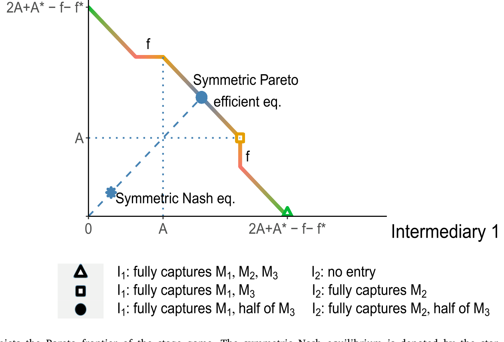
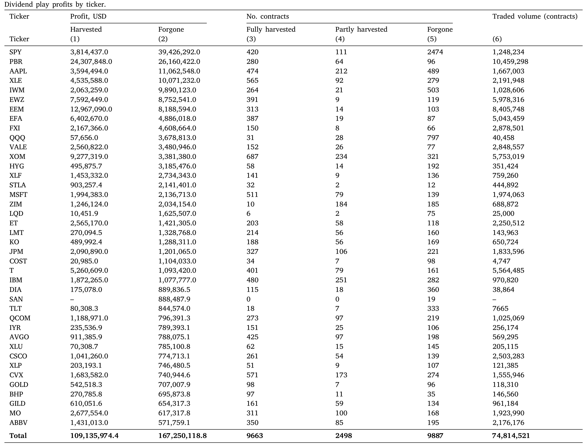
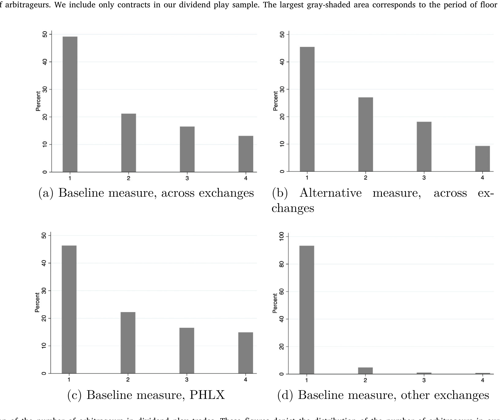
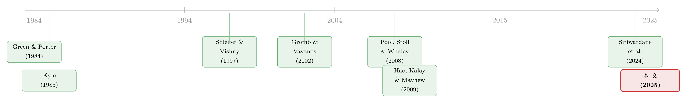

无风险的钱，为什么没人捡？——把「套利者」从原子变成博弈玩家
本文读的是 Bryzgalova, Pavlova & Sikorskaya (2025, Journal of Financial Economics)：在有进入成本、套利者只有寥寥数家的市场里，套利不再是「谁快谁拿」的竞争，而是一场反复进行的博弈。他们用美国期权市场的「股息博弈 (dividend play)」做实验室，发现近乎无风险的套利机会里，只有 57% 被人染指、总利润只被收走 44%，而真正进场的合约里又有 49% 全程只有一个套利者在做——这些看似「钱被留在桌上」的反常，恰好是重复博弈下默契合谋 (tacit collusion) 均衡的指纹。
1 引言：一笔白捡的钱，却没人去捡
先讲一个让人不太舒服的事实。
在限制套利 (limits to arbitrage) 这门学问里，我们被反复教育的图景是这样的：套利者是原子化的、彼此竞争的，任何一个无风险的价差出现，就会有无数双手伸过去，直到它被抹平为止。价差之所以能持续，要么是因为套利者受了资本约束 (Shleifer and Vishny, 1997)，要么是因为承担了我们没看见的风险 (Gromb and Vayanos, 2002)。换句话说，钱之所以留在桌上，总该有个「理由」——不是没人想捡，而是捡不动。
可如果有一类套利机会，几乎没有风险、没有价格冲击、费用还被交易所封了顶，结果却仍有近一半的钱安安静静躺在桌面上无人问津，你会怎么解释？
这正是本文抛出的悬念。作者盯上了美国期权市场里一个相当冷门、却近乎「印钞」的策略——股息博弈。在他们的样本里，这种机会里只有 57% 的合约吸引了套利者进场，被实际收走的潜在利润只有 44%；更刺眼的是，在那些有人进场的合约里，竟有 49% 自始至终只有一个套利者独享全部利润。按竞争性套利的逻辑，这是说不通的：既然钱是白捡的，为什么不一拥而上？
作者给出的答案，是把「套利者」这个词从原子重新理解成博弈玩家。
2 实验室：什么是「股息博弈」
要理解这篇文章，得先弄清楚这个奇特的套利机会从哪来。
故事的源头是投资者的一个「错误」。一只实值 (in-the-money) 的美式看涨期权，在标的股票除息 (ex-dividend) 之前，理性的持有人本应提前行权、把股票拿到手以领取股息。但现实里，总有一部分人——尤其是散户——忘了、或懒得行权（这一点早被 Poteshman and Serbin (2003) 记录过）。
接着，一个自然的问题是：这些人「漏掉」的股息，去哪了？
答案是落到了期权的卖方 (writer) 手里。在美国，行权通知是由期权清算公司 (Options Clearing Corporation, OCC) 随机指派给卖方的。被指派的卖方要交出股票；没被指派到的那些卖方，则白白吃下一笔意外之财 (windfall)。于是套利者的玩法浮出水面：在最后一个含息日 (last cum-dividend date)，写出海量的看涨期权合约，把自己塞进卖方的池子里，从而最大化「漏行权」的那笔横财被指派给自己、而非原始卖方的概率；与此同时，再建立一笔规模相当的反向多头，对冲掉这堆空头的方向性风险。
关键在于：这笔横财的总量是固定的，它会按「写出合约的份额」在参与者之间按比例 (pro-rata) 瓜分。所以这里没有价格冲击的问题，也几乎没有方向性风险——它就是一块大小已定的蛋糕，谁写得多，谁切得多。这正好对应了后面模型里「按市场份额瓜分套利机会」的设定。
而且这种交易通常是成对预约好的：一个套利者建大额空头去捕获横财，另一个做它的对手方持大额多头。所以作者在数据里把「一对」算作「一个」套利者。这些交易往往在交易所的实体交易池 (exchange floor) 上执行，因为像费城交易所 (PHLX) 这样的场所会给做市商的股息博弈封顶收费，且交易池能让成对的套利者在不暴露给其他做市商报价的情况下达成大宗双边交易。用作者的话说，如今的交易池「更像一座图书馆，而不是旧时喧闹的交易大厅」——参与者很少，而且在预定好的日子里反复碰面。
「反复碰面、人数很少」——请记住这两个词，它们是整篇文章的钥匙。
3 模型：把套利写成一场重复博弈
这是一篇有正经理论模型的文章，所以我们一步步把它拆开。
3.1 设定
时间离散、无限期。有三个市场 \(M_1, M_2, M_3\)，每个市场里有一个价值固定的套利机会。前两个市场的机会价值都是 \(A\)，第三个市场的价值是 \(A^*\)。
有两个风险中性的中间商（即套利者）\(1\) 和 \(2\)。核心概念是自然市场 (natural market)：市场 \(M_1\) 是中间商 \(1\) 的自然市场，\(M_2\) 是中间商 \(2\) 的自然市场。所谓「自然」，就是在这个市场里他的每期固定进入成本为零——比如他本来就是这只合约的做市商、手里已经攥着相关头寸，监控和抓取这个机会不用额外花钱。\(M_3\) 对谁都不是自然市场。
每个中间商有 \(1\) 单位资源在三个市场间分配。记 \(k^j_i\) 为中间商 \(i\) 投到市场 \(j\) 的资源。中间商 \(1\) 在三个市场的固定成本分别是 \(0, f, f^*\)；中间商 \(2\) 则是 \(f, 0, f^*\)。固定成本只在真正投入资源时才发生。瓜分规则是按份额：在某个市场里投了多少比例的资源，就分走多少比例的套利机会。
中间商 \(1\) 的每期收益就是这样写出来的——这也是整个模型最核心的一个方程：
对称地，中间商 \(2\) 的每期收益为
$$ \pi_2(k^1_2,k^2_2,k^3_2) \equiv A\,\frac{k^1_2}{k^1_1+k^1_2} + A\,\frac{k^2_2}{k^2_1+k^2_2} + A^*\,\frac{k^3_2}{k^3_1+k^3_2} - f\,\mathbb{1}_{k^1_2>0} - f^*\,\mathbb{1}_{k^3_2>0}. $$
他们用贴现因子 \(\delta\) 把无限期的收益加总，最大化
$$ \sum_{t=0}^{\infty}\delta^t\,\pi_i\!\left(k^1_{it},k^2_{it},k^3_{it}\right). $$
3.2 一次性博弈：人人进场，平分秋色
先看只玩一次（one-shot）的情形。在这种世界里，由于瓜分是按份额的，只要对手在某市场留了缝，你投一点资源就能分一杯羹。于是唯一的纳什均衡 (Nash equilibrium) 是：两人进入所有市场、平分每个机会。中间商 \(1\) 的收益是
$$ \underbrace{A\cdot\tfrac{1}{2}}_{M_1} + \underbrace{A\cdot\tfrac{1}{2}}_{M_2} + \underbrace{A^*\cdot\tfrac{1}{2}}_{M_3} - f - f^* = A + \tfrac{A^*}{2} - f - f^*. $$
注意：他为了去抢对手的自然市场 \(M_2\)，白白付了一笔 \(f\)；为了进 \(M_3\)，又付了 \(f^*\)。两人都这么干，于是固定成本被重复支付了。这正是一次性博弈的浪费之处。
3.3 重复博弈：谁的地盘谁待着
但真正关键的一步在于：如果博弈反复进行，能不能做得更好？
能。设想这样一个分工：中间商 \(1\) 只守自己的 \(M_1\)，中间商 \(2\) 只守自己的 \(M_2\)，谁都不去踩对方的自然市场；至于无主之地 \(M_3\)，每期只让一个人进、两人轮流坐庄。这样一来，自然市场里的机会被独家全收（份额为 1，拿走整个 \(A\)），而全社会每期只付了一份 \(f^*\)。
我们算一下中间商 \(1\) 的平均每期收益。在轮到他坐庄 \(M_3\) 的那期，\(\pi_1 = A + A^* - f^*\)；在让给对手的那期，\(\pi_1 = A\)。两期平均：
$$ A + \tfrac{A^*}{2} - \tfrac{f^*}{2}. $$
把它和一次性纳什的 \(A + \tfrac{A^*}{2} - f - f^*\) 相减，差额是
$$ f + \tfrac{f^*}{2} \;>\; 0. $$
于是反转出现了：这个看上去「不竞争」的安排，反而让每个人都赚得更多。多赚的钱不是从更高的价格里来的（套利机会的价值 \(A\) 始终没变），而是从省下来的固定成本里来的——省掉了闯对方地盘的 \(f\)，又省掉了在 \(M_3\) 重复站岗的一半 \(f^*\)。
这就是默契合谋均衡。它不是一次性博弈的纳什均衡，但在无限重复博弈里，可以用触发策略 (trigger strategy) 撑成子博弈完美均衡——只要贴现因子 \(\delta\) 足够大：谁敢偷偷闯进对方的自然市场占便宜，就触发所有人退回到「人人进场、平分秋色」的纳什世界，从此谁也别想再省那笔固定成本。这套机制最早由 Green and Porter (1984) 在产业组织里提出。「默契 (tacit)」二字的意思是：这一切不需要任何明面上的协议。
图 1 把这个故事画成了一张图：阶段博弈的帕累托前沿 (Pareto frontier) 上，对称纳什均衡（星号）被甩在了前沿内侧——也就是说，竞争把两个玩家都推到了一个本可以同时改善的次优点上。

Figure 1: Pareto frontier. The solid line depicts the Pareto frontier of the stage game. The symmetric Nash equilibrium is denoted by the star symbol
本文的新意在于：以往讲默契合谋（无论是 Dutta and Madhavan (1997) 的做市商定价，还是产业组织里 Bernheim and Whinston (1990) 的多市场接触），合谋带来的好处都来自抬高价格。而这里，玩家从默契合谋中得到的福利改善，来自选择性进入所节省的固定成本——价格（套利机会的价值）压根没动。把它搬到金融套利的语境里，也是头一回。（关于「把合谋写进激励」的另一面，可参见《把「合谋」写进高管的工资条：当反垄断的门悄悄关上》。）
模型由此给出两条可检验的预言：(i) 套利者不会进入彼此的自然市场；(ii) 在那些非自然市场里，只会有有限个、本文中是一个套利者进场。
4 识别与数据：怎么在交易里「数」出套利者
理论说得漂亮，但要检验它，得先解决一个老大难问题：限制套利的实证文献大多只能看到价格，看不到数量——因为非专有数据里观察不到套利者到底进没进场、投了多少资源。
本文恰恰是个例外。这正是股息博弈作为「实验室」的最大价值：套利机会本身可以被精确识别（哪些实值看涨期权在除息前被漏行权了），而股息博弈交易因为体量巨大、执行模式独特（成对的大额多空、close-to-midpoint 的成交价、交易池标记），在交易级数据里极易辨认。
作者的原料是期权价格报告系统 (Options Price Reporting Authority, OPRA) 的交易级数据，外加 Nasdaq 慷慨提供的 PHOTO 与 NOTO 端到端及日内历史数据。识别股息博弈交易，靠的是 OPRA 数据里对交易池成交的标记。
那「自然市场」在数据里又是什么？作者用了两个代理变量：散户买入失衡 (retail buy imbalance) 的合约（意味着做市商手里相应持有空头），以及做市商卖出失衡 (market maker sell imbalance) 的合约。直觉很顺：如果一个做市商因为做市活动，库存里本就压着某合约的空头，而买这张合约的人又没去行权，那他就能不花任何固定成本、直接把这笔横财收入囊中——这完全符合「自然市场」的定义。而散户更容易漏行权，这进一步强化了第一个代理变量的合理性。
5 主要结果：四个反常，一个解释
把数据摊开，先看一个让人安心的「正常」现象：在被股息策略盯上的实值看涨期权上，最后含息日的当日成交量显著高于其余日子，常常高出 100 倍。所以——逐利的套利者确实在干这件事，机会是真的。
但接下来的四个模式，才是真正反常、也真正有意思的地方：
第一，进场率低得离谱。 套利者只进了 57% 的盈利机会，只收割了全部潜在利润的 44%。
第二，一旦进场，就吃干抹净。 在他们决定参与的那些合约里，可获得的利润几乎被全部拿走。
第三，最肥的肉反而被放过。 盈利能力最高的那一档（top tercile）合约里，有 37% 根本没人进场；甚至在同一只标的上，套利者也只挑一部分合约做，偏偏漏掉了其中最赚钱的几张。
第四，也是最刺眼的：人少得惊人。 在检测到有套利者进场的合约里，49% 的全部利润由单独一个套利者独吞。算上所有合约，同时参与的套利者超过 4 个的情形仅占 8%，超过 10 个的不到 1%。要是把 PHLX 这一家交易所从样本里剔掉，则超过 95% 的进场合约都只有一个套利者。
表 4 把这件事换算成了真金白银：在最热门的 40 只标的股票和 ETF 上，套利者究竟「留在桌上」多少利润。

Table 4
而第四个模式的全貌，就摊在「每个合约的套利者数量分布」这张图里——绝大多数质量都堆在「1」上。

Figure 5: Distribution of the number of arbitrageurs in dividend play trades. These figures depict the distribution of the number of arbitrageurs in o
这些为什么反常？因为在标准的限制套利框架里，套利者的进入应当有个基于盈利性的啄食顺序 (pecking order)：越赚钱的机会越该先被抢光。可现实是，最赚钱的合约反而常常无人问津，而且没有任何明显的门槛阻止那些已经在别的合约上做股息博弈的套利者，再多进一张。费用被封顶了，所以不是费用问题；成交贴着中间价，所以不是交易成本问题；风险敞口按 ticker 轧差到零，所以也不是资本约束问题。作者还专门检验了操作风险、隔夜风险这些「风险类」度量，结论是它们与合约选择「几乎无关」。
那剩下的解释是什么？正是模型：没人进场的合约，是某个做市商的自然市场——他库存里压着空头，不花成本就把横财收了，别人识趣地不来抢；而那些两边都不持有的「写出合约」，则正好对应只有一个套利者进场的预言。哪怕只看最赚钱的那一档合约，这个规律依然成立。
把这四个反常逐一对回模型：低进场率 ↔「不踩对方自然市场」；单一套利者 ↔「非自然市场只进一个人」；放过最肥的肉 ↔ 那张肉正躺在别人的库存里。四块拼图严丝合缝地拼回了同一张图——这恰恰是重复博弈默契合谋的指纹。
6 监管的猫鼠游戏
故事还有一个尾声，关于监管为什么这么难做。
2014 年，SEC 担心股息博弈影响市场的有序运行，批准了一条新的清算规则：同一张合约的敞口必须在 OCC 指派行权之前就先轧差掉，从而让「买卖同一张合约」这种股息博弈的标准做法失去意义。
然后呢？用作者的话说，套利者「没花多少时间」就绕了过去——只要改一改策略的实现方式（不再买卖同一张合约，而是换用相似但不同的合约），监管设下的栅栏就被轻巧地跨了过去。第 5 节细致地展示了 Pool, Stoll and Whaley (2008) 与 Hao, Kalay and Mayhew (2009) 当年描述的那套老策略，是如何在 2014 新规之后悄悄变形、重生的。作者据此提出了一条他们认为可能真正管用的规则修改建议。
这一段的味道，和监管套利文献里反复上演的「打地鼠」如出一辙（可参见《被赶走的「坏掮客」去了哪里？——监管缝隙里的打地鼠游戏》）。
7 文献脉络
把这篇文章放回它生长的那条藤蔓上，会看得更清楚。
最上游有两股力量。一股来自博弈论与产业组织：Green and Porter (1984) 奠定了「不完全信息下用触发策略支撑合谋」的分析框架，而 Kyle (1985) 则开创了金融市场里策略性交易的微观结构传统。另一股来自资产定价：Shleifer and Vishny (1997) 与 Gromb and Vayanos (2002) 立起了「限制套利」这面大旗，但他们笔下的套利者始终是竞争性的。

中游是两条支流的合并。一边，Dutta and Madhavan (1997) 把重复博弈搬进了做市商市场，解释了 Christie and Schultz (1994) 发现的 NASDAQ 做市商集体回避奇数八分位报价之谜——但那讲的是定价合谋。另一边，股息博弈这个具体现象，最早由 Pool, Stoll and Whaley (2008) 和 Hao, Kalay and Mayhew (2009) 描述清楚——但他们没有去数每张合约里到底有几个套利者，也没记录这种「在盈利合约上普遍存在的选择性进入」。
到了今天，Siriwardane, Sunderam and Wallen (2024) 用「分割套利 (segmented arbitrage)」一词，把「套利者在一小撮市场里专精」这件事摆上了台面。本文恰好站在这几条线的交汇处：它既不讲价格合谋、也不假设竞争性套利，而是把重复博弈下因固定成本而生的选择性进入，第一次作为一种全新的、福利来自省成本而非抬价格的默契合谋机制，落到了金融套利的实证检验上。
8 评论与延伸（Q&A + 研究方向）
(a) 几个可能的疑问
Q：这跟「分割套利 (segmented arbitrage)」到底有什么不一样？
Siriwardane et al. (2024)、Eisfeldt et al. (2023b) 等也记录了套利者在子市场上的专精，但他们的机制是竞争性的——专精源于专长或成本异质性。本文的不同之处在于专精是策略性博弈的均衡产物：套利者明明有能力进却选择不进，因为他们在重复互动中默契地避开了彼此的地盘。同样是「选择性进入」，一个是被动的禀赋，一个是主动的克制。
Q：「57% 进场、44% 收割」会不会只是没识别全？也许另外的钱其实被收了，只是你没看见。
这是最该担心的识别问题，作者的回应是：没进场不等于钱被浪费，模型预言这些利润恰好流向了那个自然市场里的在位者——他不花固定成本、直接把库存里的横财收下，所以在交易数据里看不到「新的进场」。两个自然市场代理（散户买入失衡、做市商卖出失衡）正是用来佐证这一点的。当然，「看不见的收割」与「真的没人收」在数据上确实难以完全区分，这是它的软肋。
Q：单一套利者那么多，会不会只是 PHLX 一家交易所的制度特例？
恰恰相反，作者明说剔除 PHLX 后，超过
95%的进场合约只有一个套利者——也就是说，去掉那个费用封顶最友好的交易所，单一套利者的现象不仅没消失，反而更极端。这反过来加强了「人少」是结构性的、而非某家交易所特例的论断。
Q：为什么敢说这是「默契」而不是「明谋」？毕竟成对预约的交易听上去很像串通。
模型的「tacit」是指均衡不需要任何明面协议，靠触发策略自我维持即可。实证上作者无法、也没有声称去证明存在显性合谋；他们论证的是观察到的模式与默契合谋均衡相一致，且费用、成本、资本、风险这些竞争性解释都被逐一排除。这是「consistent with」而非「caused by」，措辞上是克制的。
Q：套利机会价值 \(A\) 在模型里是外生固定的，这合理吗？
在股息博弈这个特定应用里相当合理——横财的总量由「漏行权」的规模决定，与套利者写多少合约无关，且按份额瓜分、无价格冲击。但作者也坦承，模型若要推广到其他市场（如 OTC、信用衍生品），\(A\) 的外生性就需要重新审视，价格冲击可能回到画面里。
Q：贴现因子 \(\delta\) 要多大才撑得住合谋？这个门槛在数据里可信吗？
模型只要求 \(\delta\) 足够高，并未给出一个能直接拿数据去拒绝的点估计。考虑到股息博弈是在预定日期反复进行、参与者高度固定、且彼此能在 OPRA 里看到对方的历史活动，重复博弈的前提在现实中是站得住的——但「\(\delta\) 够大」本身没有被独立量化，这一步更多是叙事而非检验。
(b) 几个可能的研究问题与提案
1. 把这套框架搬到公司债大宗交易的「接盘人」上。
【经济故事】公司债二级市场高度依赖少数几家交易商，大宗交易的承接也常集中在固定几个对手之间，天然具备「自然市场 + 重复互动」的结构。如果某些交易商在特定行业/久期的债券上是「自然接盘人」，是否也存在默契的选择性进入？（与《谁来接住这一大笔债券？——公司债大宗交易里被遗忘的「接盘人」》直接对话。） 【可行性】中。TRACE 提供交易级数据，但交易商身份需要 enhanced/regulatory 版本才能识别；识别策略可借鉴本文的「数参与者」，难点在于公司债没有股息博弈这样干净的、外生的套利机会。
2. 外资持有人是不是某些套利的「天然玩家」？
【经济故事】在跨境套利（如 CIP 偏离、税收套利）中，特定司法辖区的投资者因税务或监管身份而拥有「自然优势」，这恰好是本文「自然市场」概念的国际版。能否在跨境持仓数据里观察到外资套利者按辖区「划分地盘」的默契分工？ 【可行性】中偏低。需要细颗粒度的跨境持仓与衍生品数据，识别「谁本可进却没进」尤其困难；但若能锁定一个像股息博弈这样规则清晰的税收套利，可行性会大幅提升。
3. 自然市场的「人数」与流动性供给质量。
【经济故事】本文把「限制套利」重新诠释为「对在某市场套利者数量的（内生）限制」。一个自然的推论是：当某合约的自然套利者从 1 个变成 2 个（比如做市商格局变化），定价效率和流动性会怎样跳变？ 【可行性】高。可利用做市商进入/退出、交易所合并等事件做事件研究，因变量用买卖价差、定价偏离；本文已提供识别套利者数量的方法，外生冲击是关键。
4. 监管「打地鼠」的动态建模与检验。
【经济故事】2014 SEC 规则被迅速绕过，是「规则 vs 相机抉择」这一经典张力的鲜活案例。能否把套利者对规则的适应建成一个学习/博弈过程，并用规则前后的策略变形数据去估计「监管半衰期」？ 【可行性】高。规则变更日期明确，OPRA 数据可观察策略实现方式的前后变化；难点在于把「变形」量化成一个连续指标，而非个案叙事。
5. 把「自然市场 = 库存里压着空头」搬到 ETF 的运营性卖空。
【经济故事】ETF 授权参与人 (AP) 因做市与申赎活动，常天然持有特定头寸，这与本文「做市商因库存而成为自然套利者」高度同构。运营性卖空里是否也藏着类似的选择性进入？（与《高得反常的 ETF 卖空：到底是违规，还是流动性的另一副面孔？》相呼应。） 【可行性】中。需要 AP 层面的持仓与申赎数据，识别难度取决于能否拿到足够细的运营性卖空标记。
我的判断
这篇文章最漂亮的地方，是它把一个被理论严重忽视的角落——「钱被留在桌上」也可能是均衡，而非失灵——用一个极其干净的实验室坐实了。限制套利文献长期受困于「只见价格、不见数量」，而股息博弈让作者罕见地同时看到了套利者进没进、进了几个、投了多少，这是数据上的稀缺品。模型简洁，四个反常事实与两条预言的对应也足够整齐，读起来有一种「原来如此」的痛快。
我的主要担心在识别的「另一半」：「没进场=自然市场在位者已悄悄收走」这条解释，本质上诉诸一个看不见的收割，它与「真的没人收、钱真被浪费了」在数据上很难彻底切开。两个自然市场代理（散户买入失衡、做市商卖出失衡）做了不少弥补，但代理终究是代理。此外，重复博弈的核心参数 \(\delta\) 始终停留在「足够大」的叙事层面，没有被独立量化或拿去做反事实——这让模型更像是一个自洽的解释框架，而非一个被严格拒绝过的结构。
后续我最想看到两件事：一是直接刻画那个「在位的自然套利者」——能不能在数据里把他指认出来、看他到底收了多少，把「看不见的收割」变成「看得见的收割」；二是把这套「策略性、重复博弈、按地盘分工」的视角，搬到更不透明、更集中的 OTC 与公司债市场去——作者自己也在结尾点了这个方向，而那恰恰是限制套利真正最该被重新审视的地方。
参考文献
- Bryzgalova, S., Pavlova, A., Sikorskaya, T. (2025). Strategic arbitrage in segmented markets. Journal of Financial Economics 166, 104008.
- Bernheim, B. D., Whinston, M. D. (1990). Multimarket contact and collusive behavior. Rand Journal of Economics 21(1), 1–26.
- Christie, W. G., Schultz, P. H. (1994). Why do NASDAQ market makers avoid odd-eighth quotes? Journal of Finance 49(5), 1813–1840.
- Dutta, P. K., Madhavan, A. (1997). Competition and collusion in dealer markets. Journal of Finance 52(1), 245–276.
- Green, E. J., Porter, R. H. (1984). Noncooperative collusion under imperfect price information. Econometrica 52(1), 87–100.
- Gromb, D., Vayanos, D. (2002). Equilibrium and welfare in markets with financially constrained arbitrageurs. Journal of Financial Economics 66, 361–407.
- Hao, J., Kalay, A., Mayhew, S. (2009). Ex-dividend arbitrage in option markets. Review of Financial Studies 23(1), 271–303.
- Kyle, A. S. (1985). Continuous auctions and insider trading. Econometrica 53(6), 1315–1335.
- Pool, V. K., Stoll, H. R., Whaley, R. E. (2008). Failure to exercise call options: An anomaly and a trading game. Journal of Financial Markets 11(1), 1–35.
- Poteshman, A. M., Serbin, V. (2003). Clearly irrational financial market behavior: Evidence from the early exercise of exchange traded stock options. Journal of Finance 58(1), 37–70.
- Shleifer, A., Vishny, R. W. (1997). The limits of arbitrage. Journal of Finance 52(1), 35–55.
- Siriwardane, E., Sunderam, A., Wallen, J. L. (2024). Segmented arbitrage. Journal of Finance, forthcoming.